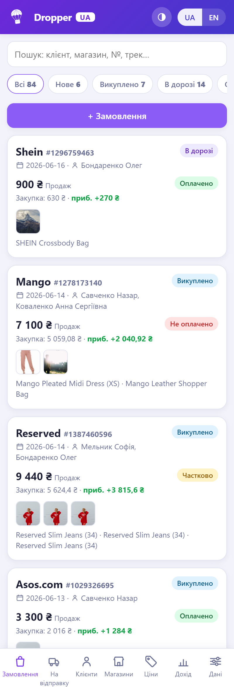
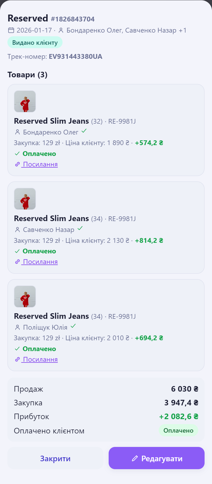
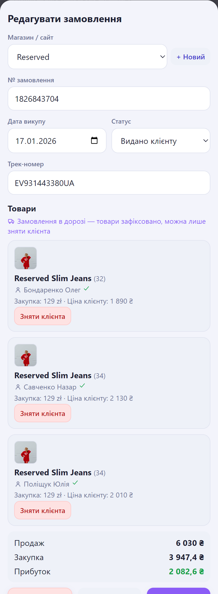
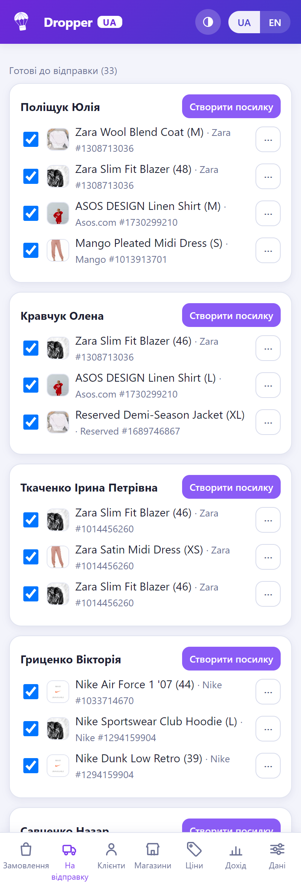
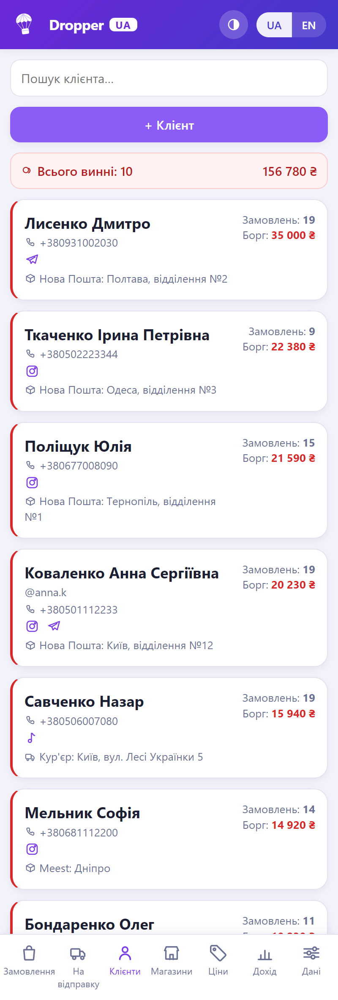
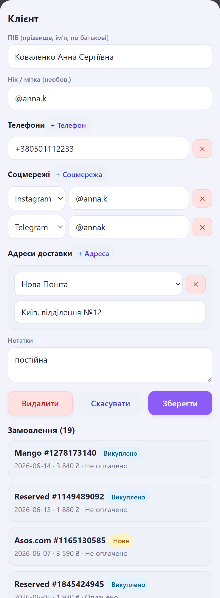
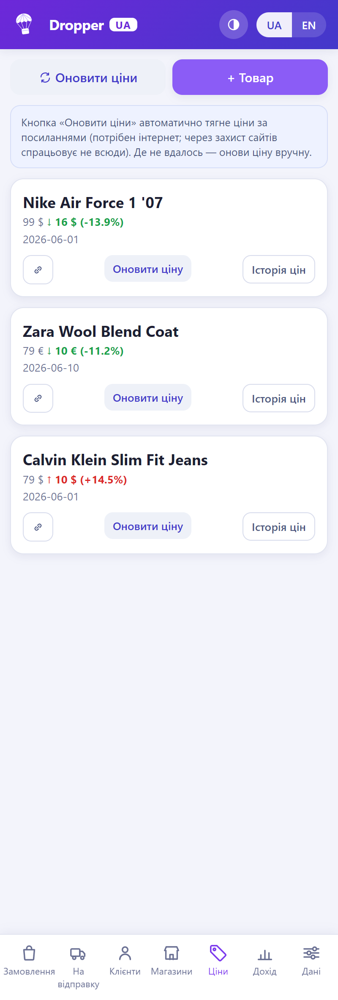
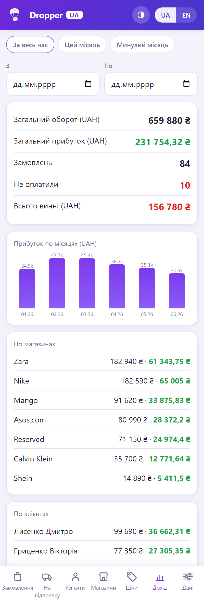
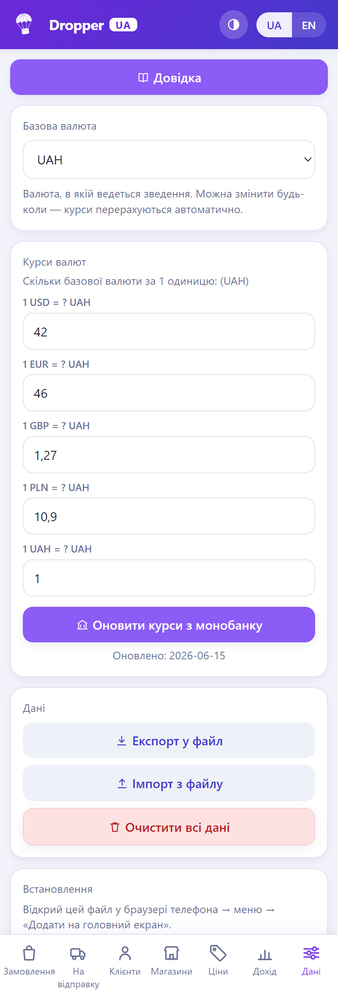

1 З чого почати
Dropper UA відкривається у браузері. Встановлювати нічого не потрібно.
- Відкрийте застосунок: за посиланням (якщо розміщений онлайн) або файл
index.html. - Заведіть магазини, з яких купуєте, і клієнтів (можна й на ходу, прямо із замовлення).
- Створіть перше замовлення, додайте в нього товари з цінами закупки та продажу.
- Коли товар приходить — пакуйте його в посилку з ТТН і відправляйте клієнту.
- Час від часу робіть Експорт у файл (вкладка «Дані») — це ваша резервна копія.
2 Знайомство з екраном
Знизу — панель вкладок: Замовлення, На відправку, Клієнти, Магазини, Ціни, Дохід, Дані. Між вкладками можна також гортати свайпом вліво/вправо. Угорі праворуч — перемикач теми (світла/темна/авто) і мови (UA/EN).

3 Замовлення
Замовлення — це покупка на сайті: магазин, № замовлення, дата й товари. У кожного товару свій клієнт, ціна закупки та ціна для клієнта — і закупка та продаж можуть бути в різних валютах (додаток зводить усе в базову валюту).


Як додати замовлення
- На вкладці Замовлення натисніть «+ Замовлення».
- Оберіть магазин (або створіть новий кнопкою «+ Новий»), впишіть № замовлення й дату.
- Додайте товари: назва, артикул, розмір, кількість, ціна закупки й ціна клієнту (кожна — у своїй валюті).
- Для кожного товару виберіть клієнта. У межах одного замовлення товари можуть бути для різних клієнтів.
- За потреби додайте фото та посилання на товар.
- Натисніть Зберегти.
Перегляд і редагування
Тап по картці відкриває перегляд замовлення (лише читання) з підсумком продажу, закупки й прибутку. Щоб змінити — тисніть «Редагувати». Закрити вікно можна кнопкою «Закрити» або подвійним тапом по темному фону поза вікном.
4 Статуси замовлення
Статус показує, на якому етапі замовлення. Порядок такий:
- Тап по бейджу статусу у списку просуває його вперед — але лише до «Отримано».
- Далі статус змінюється тільки через ручне редагування замовлення (форма → поле «Статус»).
- «Видано клієнту» зазвичай ставиться автоматично, коли клієнт отримав посилку (див. розділ 5). Вручну його теж можна виставити у формі редагування.
- Коли замовлення вже «В дорозі» — товари в ньому зафіксовано: їх не можна змінювати, дозволено лише зняти клієнта з товару (зробити «без клієнта»).
5 На відправку (посилки)
Коли замовлення доходить до статусу «Отримано», його товари з'являються тут, згруповані за клієнтом і готові до пакування в посилку.

Як сформувати посилку
- У групі клієнта позначте галочками товари, які кладете в посилку.
- Натисніть «Створити посилку».
- Оберіть оператора (Нова Пошта, Укрпошта тощо) і впишіть ТТН — він обов'язковий.
- Збережіть. Кнопка «Трекінг» на посилці відкриє сайт оператора за цим ТТН.
Життєвий цикл посилки
Тап по бейджу посилки просуває її статус. Коли посилка стає «Отримано клієнтом», відповідне замовлення автоматично переходить у «Видано клієнту», а сама посилка ховається в архів «Доставлені» внизу вкладки.
6 Клієнти
Клієнт — це отримувач замовлень. Картка містить ПІБ, нік, телефони, соцмережі та адреси доставки.


- Контакти: кілька телефонів, соцмережі (Instagram, TikTok, Threads, Facebook, Telegram) — іконки клікабельні й ведуть у профіль.
- Адреси доставки: Нова Пошта, Укрпошта та інші — з номером відділення/адресою.
- Пошук згори миттєво знаходить клієнта за ім'ям, ніком чи телефоном — зручно, коли прийшла його посилка.
- Боржники показані вгорі списку; на картці видно, скільки замовлень і скільки клієнт ще винен. Угорі — загальна сума боргів.
7 Магазини
Ведіть сайти/магазини, з яких купуєте, окремими записами. Це не лише зручний вибір у замовленні — на цьому будується розбивка доходу по магазинах у вкладці «Дохід».
8 Ціни
Окремий список товарів, за цінами яких ви стежите (наприклад, чекаєте знижку перед викупом).

- Кнопка «Оновити ціни» пробує підтягнути свіжі ціни онлайн (працює для багатьох магазинів і враховує знижки).
- Де автоматично не вдалось — впишіть ціну вручну; додаток збереже історію змін.
- Товари, у яких ціна впала, піднімаються вгору списку — щоб одразу бачити вигідні моменти.
9 Дохід
Зведення по грошах за обраний період.

- Оберіть період (все / цей місяць / попередній) або власний діапазон дат.
- Загальний оборот і прибуток у базовій валюті, графік прибутку по місяцях.
- Розбивки по магазинах і по клієнтах.
- Отримано (продаж) і Витрачено (закупка) — по кожній валюті окремо, з рядком «Разом», зведеним у базову валюту.
- Скільки клієнтів ще не оплатили та загальний борг.
10 Дані, валюти та бекап
Вкладка «Дані» — налаштування й безпека ваших даних.

Валюти й курси
- Базова валюта — у ній зводяться всі підсумки. Курси решти валют — редаговані вручну.
- Кнопка «Монобанк» підтягує актуальні курси автоматично (за наявності інтернету).
- Підтримуються USD, EUR, GBP, PLN, UAH.
Бекап і відновлення
- Експорт у файл — збереже всі дані у файл
.json. Робіть це регулярно. - Імпорт з файлу — відновить дані з такого файлу (напр., на новому телефоні).
- «Відновити попередні дані» — поверне останній автоматичний знімок, якщо щось пішло не так.
11 Питання й відповіді
Що буде, якщо додати товар без клієнта?
Товар збережеться «без клієнта». Клієнта можна проставити пізніше — зокрема прямо під час формування посилки (розділ 5), і він одразу зафіксується на товарі.
Чому не змінюється статус із «Отримано» тапом у списку?
Це навмисно: тапом у списку статус просувається лише до «Отримано». Далі («Видано клієнту») ставиться автоматично при отриманні посилки або вручну через «Редагувати».
Не можу відредагувати товар у замовленні — чому?
Коли замовлення вже «В дорозі», товари зафіксовано. Дозволено лише зняти клієнта з товару. Це захищає вже відправлені замовлення від випадкових змін.
Закупка й продаж у різних валютах — це нормально?
Так. Кожна ціна має свою валюту; додаток зводить усе в базову валюту за курсами з вкладки «Дані». Курс замовлення фіксується на статусі «Викуплено».
Я випадково все видалив. Що робити?
На вкладці «Дані» натисніть «Відновити попередні дані» (останній автознімок). Якщо робили Експорт — скористайтеся Імпортом цього файлу.
Чи можна змінити мову й тему?
Так. Українська та English, а також світла/темна/авто тема — усе вгорі екрана та у вкладці «Дані».
Як перенести додаток на новий телефон?
На старому: Експорт у файл. На новому: відкрийте додаток і зробіть Імпорт цього файлу.